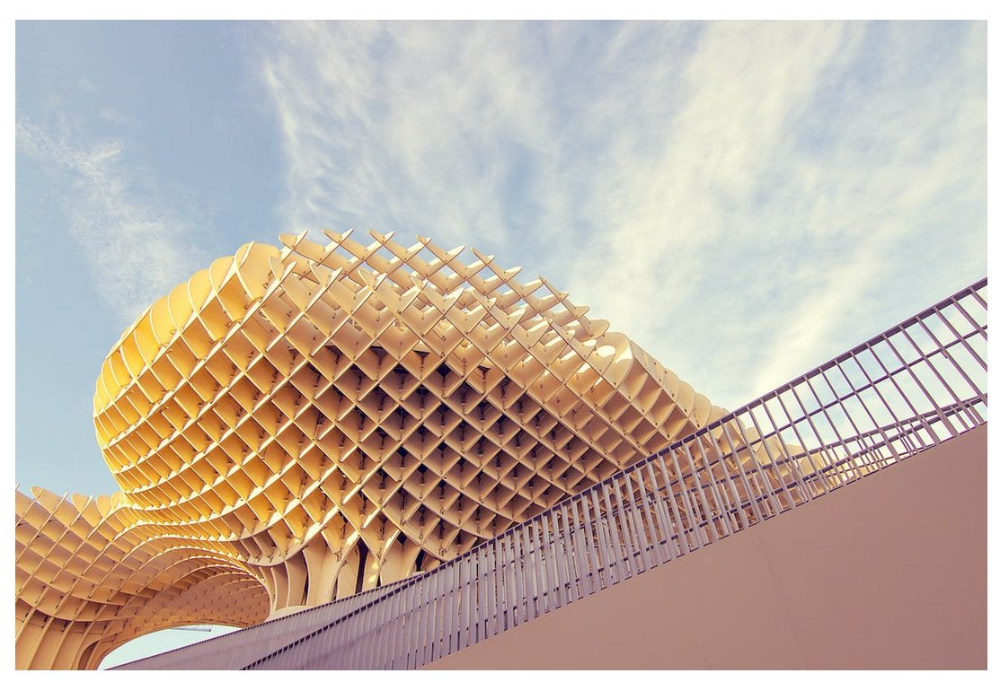
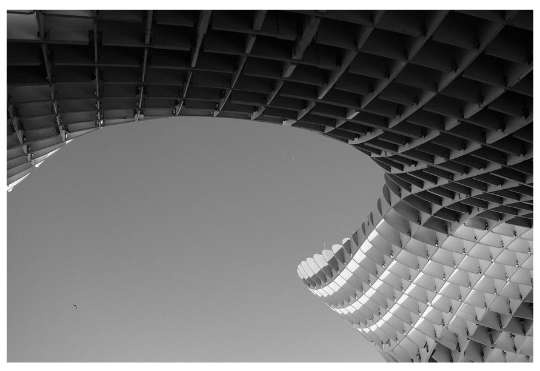

La imagen de las setas tiene en el css position: absolute;
Eso desbloque las propiedades top, right, bottom y left y lo saca
del flujo normal de la página.
Los valores top, right, bottom y left son coordenadas respecto a la primera
etiqueta antecesora que encuentre con position: relative (si no encuentra ninguna
será respecto al body).
Por eso la <div class="imagen"> tiene como position:relative,
que no lo saca del flujo normal de la página.
Para que la imagen no se coloque encima de la cabecera en ninguna circunstancia, el <h1> tiene un
z-indez:1>, lo que lo cola en una capa superior.
